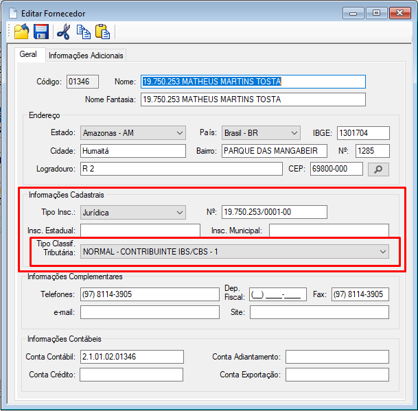

Configurações Gerais - Reforma Tributária
Anotações pertinentes aos atendimentos diários
1 - Considerações Iniciais
- Localização:
- Arquivos: Opções > Objetos Explorer > Ativo .ADM > Arquivos
- Ferramentas: Opções > Objetos Explorer > Ativo .ADM > Ferramentas
- Arquivos:
- NCM - Produtos
- Classificação Tributária de IBS/CBS
- Tipos de Classificação Tributária
- Grupos Tributários
- Ferramentas:
- Definir Classificação Tributária IBS/CBS
- Definir Grupos Tributários
2 - Cadastro de Alíquotas
2.1 - Arquivo: Empresas
- Guia Tributação
- Ajustar a alíquota da CBS.
2.2 - Arquivo: Estados
- Para incluir a alíquota do IBS vigente no Estado.
2.3 Arquivo: Cidades
- Para incluir a alíquota do IBS vigente no Município.
- Para incluir a alíquota do CBS vigente para redução no Estado.
- Incluir na pasta: C:\Program Files (x86)\Ativo .ERP 10\LogoNF-e.gif (sem CNPJ).
3 - Cadastro e Configuração das Classificações
3.1 Arquivo: Tipos de Tributações IBS/CBS
- Objetivo: Classificar os tipos de vendas e operações.
- Vínculo: Este cadastro serve para exibir nos arquivos “Operações” e “Operações N.Fs Fornecedores”.
- Exemplo dos tipos: Venda Tributada, Venda não tributada, Bonificação, Doação, Avarias, Ajuste de Inventário, Devolução e Retorno.
3.2 Arquivo: Operações
- Define que a tal operação movimentará para o tipo de classificação tributária selecionados.
- Vínculo: Guia Tributação > Campos Tributação do ICMS e Tipo Tributação IBS/CBS.
3.3 Arquivo: Operações N.Fs Fornecedores
- Define que a tal operação movimentará para o tipo de classificação tributária selecionados.
- Vínculo: Campo: Tipo de Tributação IBS/CBS
- Localização: Abaixo do CFOP.
3.4 Arquivo: Tipo de Classificação Tributária
- Define o tipo de cliente para a classificação tributária.
- Exemplo: Consumidor Final, Simples Nacional, ZFM/ALC.
- Localização arquivo Clientes: Guia Geral.
3.5 Arquivo: Clientes
- Define o tipo de cliente para a classificação tributária.
- Exemplo: Normal - Contribuinte IBS/CBS.
- Vínculo: Campo Tipo de Governo
- Exemplo: União - 1, Estado - 2, Distrito Federal e Município - 3.
- Clientes que não são órgãos do governo selecione “Nenhum”.
- Localização: Guia Geral > Tipo Classif. Tributária.
3.6 Arquivo: Fornecedores
- Define para permitir classificar o tipo de classificação tributária.
- Exemplo: Normal - Contribuinte IBS/CBS.
- Localização: Guia Geral > Informaçoes Cadastrais > Tipo Classif. Tributária.
{kind=link}

3.6 Arquivo: Grupos Tributários
- Agrupa os NCM’s dos produtos que terão a mesma classificação tributária.
- Exemplo: Produtos da Cesta Básica, Produtos Isentos, Produtos ST.
3.6 Arquivo: NCM - Produtos
- Define o NCM de cada produto
- Valida duplicidades, não sendo possível criar NCM’s iguais para os mesmos produtos.
3.6 Arquivo: Classificação Tributária de IBS/CBS
- Define ou edita a classificação tributária para os produtos que necessitam informar o percentual de redução
- Exemplo: Produtos da Cesta Básica, Produtos Isentos, Produtos ST.

4 - Ferramentas para Configurar e Redefinir
4.1 Ferramenta: Definir Classificação Tributária IBS/CBS
- Redefine classificação tributária relacionado ao NCM do produto
- Agrupa e vincula os parâmetros do grupo tributário e a classificação tributária para compor o CST.
4.2 Ferramenta: Configurações NF-e
- Ao marcar habilita para o sistema gravar as tags do IBS e da CBS no arquivo do xml.
- Localização: Guia Arquivo xml > Campo: Informações dos Tributos do IBS/CBS.